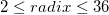
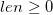

Base
Base-func
Description
Convert a given integer num into a string representation in the specified radix.
Syntax
string base(int num, int radix[, int len])$
Parameters
num
- The integer to be converted.
radix
- The integer of the radix(base) to convert num into. .
len
- Optional. The integer of the minimum length of the converted string. . If the converted string is shorter than len, 0 will be added to the beginning of the string.
Return
Return a string representation in the specified radix
Example
base(34, 2)$ = ; // 100010
base(5248123, 16)$ = ; // 50147B
base(5035996273705,10,16)$=; // 0000002147483647